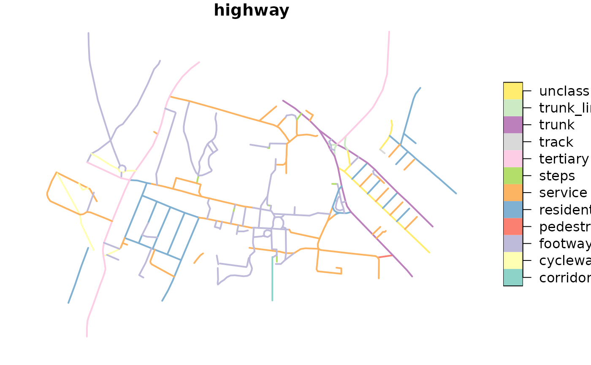
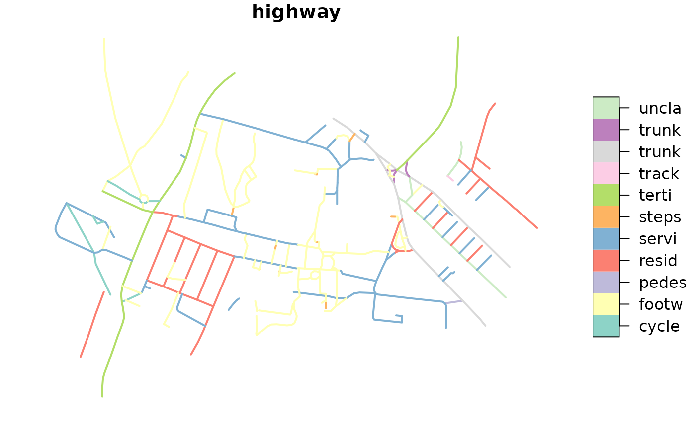
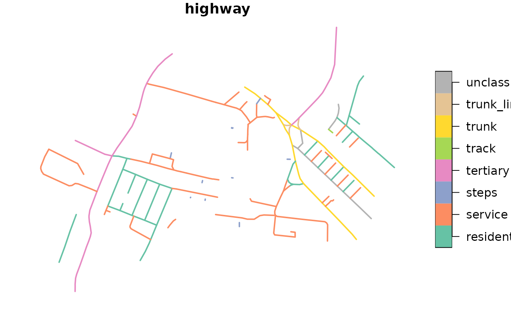

Import transport network used by a specific mode of transport
Source:R/get-network.R
oe_get_network.RdThis function is a wrapper around oe_get() and can be used to import a road
network given a place and a mode of transport. Check the Details for a
precise description of the procedures used to filter each mode of transport.
oe_get_network(place, mode = c("cycling", "driving", "walking"), ...)
Arguments
| place | Description of the geographical area that should be matched with
a |
|---|---|
| mode | A character string denoting the desired mode of transport. Can be abbreviated. Currently cycling (the default), driving and walking are supported. |
| ... | Additional arguments passed to |
Value
An sf object.
Details
The definition of usable transport network was taken from the Python packages osmnx and pyrosm and several other documents found online, i.e. https://wiki.openstreetmap.org/wiki/OSM_tags_for_routing/Access_restrictions, https://wiki.openstreetmap.org/wiki/Key:access. See also the discussion in https://github.com/ropensci/osmextract/issues/153.
The cycling mode of transport (i.e. the default value for mode
parameter) selects the OSM ways that meet the following conditions:
The
highwaytag is not missing and is not equal toabandonded,bus_guideway,byway,construction,corridor,elevator,fixme,escalator,gallop,historic,no,planned,platform,proposed,racewayorsteps;The
highwaytag is not equal tomotorway,motorway_link,footway,bridlewayorpedestrianunless the tagbicycleis equal toyes(see here) for more details;The
accesstag is not equal toprivateornounlessbicycletag is equal toyes;The
bicycletag is not equal tono,use_sidepath,private, prrestricted;The
servicetag does not contain the stringprivate(i.e.private;private_accessand similar);
The walking mode of transport selects the OSM ways that meet the
following conditions:
The
highwaytag is not missing and is not equal toabandonded,bus_guideway,byway,construction,corridor,elevator,fixme,escalator,gallop,historic,no,planned,platform,proposed,raceway,motorwayormotorway_link;The
highwaytag is not equal tocyclewayunless thefoottag is equal toyes;The
accesstag is not equal toprivateornounlessfoottag is equal toyes;The
foottag is not equal tono,use_sidepath,private, prrestricted;The
servicetag does not contain the stringprivate(i.e.private;private_accessand similar).
The driving mode of transport selects the OSM ways that meet the
following conditions:
The
highwaytag is not missing and is not equal toabandonded,bus_guideway,byway,construction,corridor,elevator,fixme,escalator,gallop,historic,no,planned,platform,proposed,cycleway,pedestrian,bridleway,path, orfootway;The
accesstag is not equal toprivateorno;The
servicetag does not contain the stringprivate(i.e.private;private_accessand similar).
Feel free to start a new issue in the github repo if you want to suggest modifications to the current filters or propose new values for alternative modes of transport.
See also
Examples
# default value returned by OSM its = oe_get("ITS Leeds", quiet = TRUE) plot(its["highway"], lwd = 2, key.pos = 4, key.width = lcm(2.75))
# walking mode of transport its_walking = oe_get_network("ITS Leeds", mode = "walking", quiet = TRUE) plot(its_walking["highway"], lwd = 2, key.pos = 4, key.width = lcm(2.75))
# driving mode of transport its_driving = oe_get_network("ITS Leeds", mode = "driving", quiet = TRUE) plot(its_driving["highway"], lwd = 2, key.pos = 4, key.width = lcm(2.75))